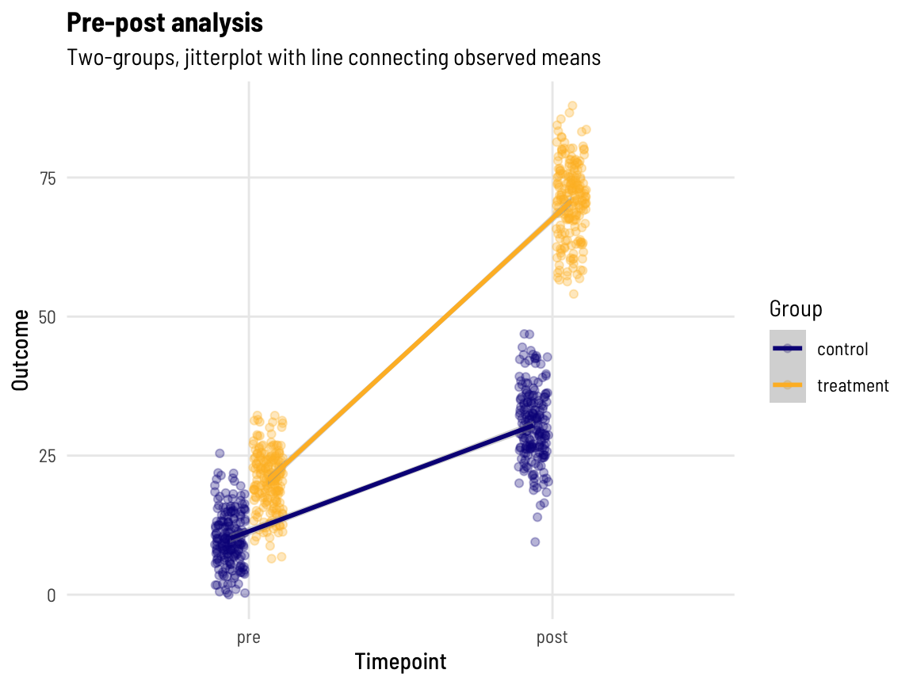
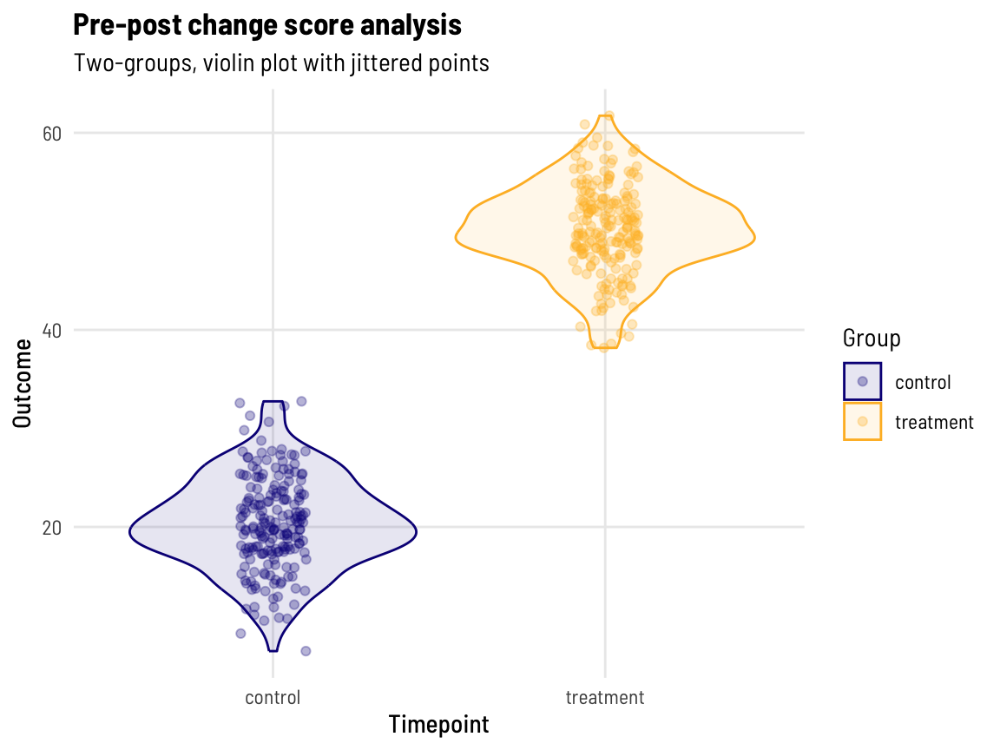
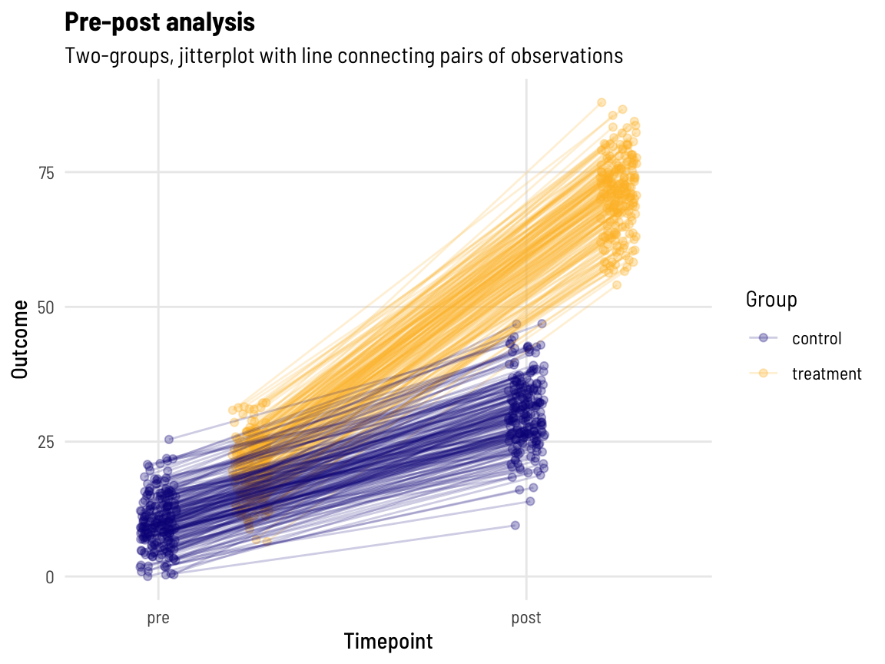
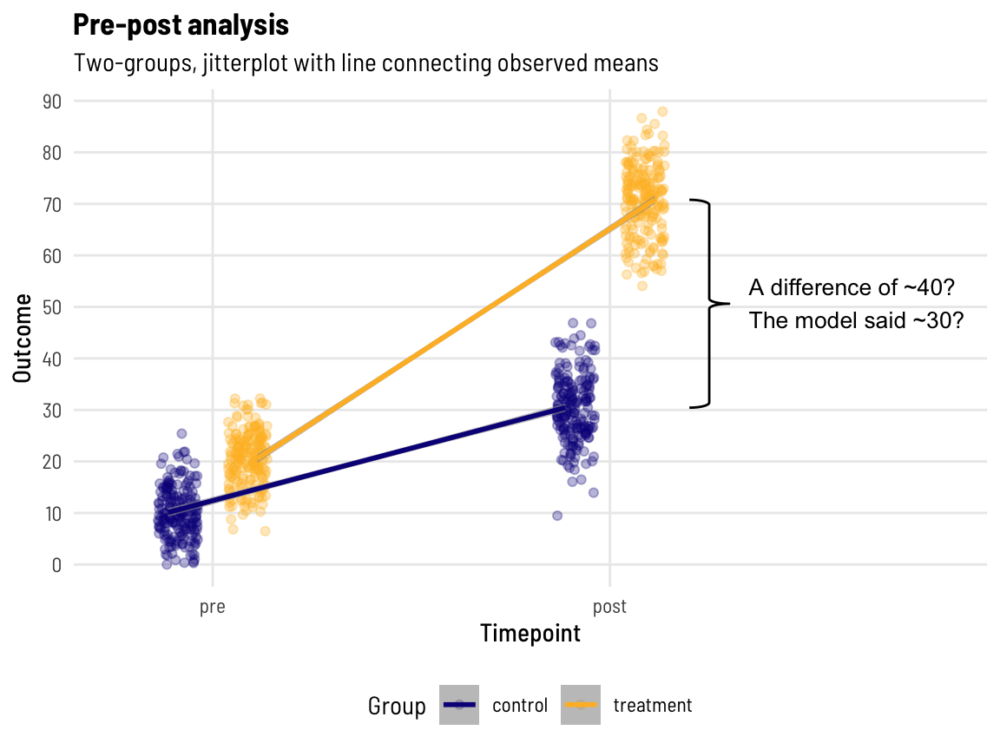

id group time out timepoint
<int> <char> <int> <num> <char>
1: 1 treatment 1 20.71677 pre
2: 2 treatment 4 19.95806 pre
3: 3 treatment 12 25.49292 pre
4: 4 treatment 27 28.72701 pre
5: 5 treatment 16 19.74429 pre
---
798: 397 control 184 26.37403 post
799: 398 control 156 36.85208 post
800: 399 control 177 22.81521 post
801: 400 control 206 35.56838 post
802: 401 control 193 34.11446 postOverview
Pre-post designs are in use everywhere we look. Before and after treatment, e.g. in a randomised clinical trial, might be the example that most readily comes to mind for analysts in the health sciences area. However, the pre-post concept occurs in many non-randomised settings as well, like observational studies or retrospective policy evaluation studies, and can feature in our daily lives without us even knowing it (like in A/B testing to see if you spend just a little bit longer on social media or buy that chocolate bar at the checkout).
While in principle, the set-up (premise) for such a question seems straightforward, there is extensive literature debating the different approaches to the analysis of this data. The discussions around these choices may confuse the lay or even semi-experienced analyst. Often these discussions are held without a serviceable example to illustrate implementation.
Below is an example to help provide some direct links between what we see with raw data and model output, when tackling this question.
Analysis options
The context here is two groups, that both have a pre and a post measure, but they differ in some property (we’ll use ‘treatment’ in the sense of a ‘treatment’ intervention group compared to a control group). When we have pre-post data like this (focusing on continuous, approximately normally distributed data here), there are three basic approaches analysts may reach for:
- Change score analysis
- The outcome data for each participant is reduced to one data point (a change score: post-value minus pre-value)
- This can just be analysed with a t.test or alternatively as the outcome variable of a linear regression model with the treatment variable as the exposure of interest (on the right hand side (RHS) of the model)
- Other variations on this theme are also possible
- Linear regression (ANCOVA framework)
- The data is structured as one row per participant, with two variables (columns) representing the outcome (one for the pre-measure, one for post-measure)
- In the ANCOVA (Analysis of covariance) framework, the outcome variable is the post-value, and both the treatment variable (as the exposure of interest) AND the pre-value (as an adjustment variable) are included on the RHS of the model
- Linear mixed effects models
- Can be structured in the same way as linear regression, via an ANCOVA framework (and this will reduce to linear regression in certain situations), OR
- the data is structured as two rows per participant, with one row for the pre-data and one row for the post-data (there will then be a variable (column) here that represents timepoint, with values
preandpost)- both the pre- and post-measures are on the left hand side (LHS) of the model, with an interaction term between the treatment variable and timepoint on the RHS of the model (as the variable of interest)
There are a number of nuanced variations on these methods to be aware of. This post is not strictly focused on randomised controlled trials, for which a lot of methodological literature addressing this decision exists - it is intended to be a light, applied look at model implementation and interpretation (in light of examining the raw data).
Linear regression (ANCOVA framework) is typically* the recommended approach, but varied disciplines can lean more towards the other two methods.
Note.
Typically, statisticians are very reserved about making broad sweeping methodological recommendations. Typically - I share that reservation.
Setting the scene
We’re going to use some simulated data here, generated using the simstudy package.
We generate a dataset based on the following:
- Data for 204 treatment patients
- pre-data is random value with a mean of 20 (SD 5)
- post-data is the pre-value plus a random value with a mean of 50 (SD 5)
- Data for 197 control patients
- pre-data is random with a mean of 10 (SD 5)
- post-data is the pre-value plus a random value with a mean of 20 (SD 5)
- Pre-data is measured between days (time) 0 to 28 [largely ignored]
- Post-data is measured between days (time) 150 and 210 [largely ignored]
- The actual
timevariable, we will use in future examples with this dataset. For this post we will use thetimepointvariable which simply differentiates the data aspreorpost.
For full readability, we do this in four steps, and then combine. Let’s have a look:
Let’s look at the means of the data (remembering what we set them to be).
| Variable | control, N = 394 | treatment, N = 408 | ||
|---|---|---|---|---|
| pre1 | post1 | pre1 | post1 | |
out |
10.11 (4.9) |
30.45 (6.6) |
20.55 (5.2) |
70.79 (6.9) |
| 1 Mean (SD) [No. obs.] |
||||
This all makes sense:
- The control group mean increases by ~20
- The treatment group mean increases by ~50
A visual of our data
Code
dat %>%
mutate(timepoint = factor(timepoint, levels = c("pre", "post"))) %>%
ggplot(aes(timepoint, out, group = group, colour = group)) +
geom_jitter(position = position_jitterdodge(jitter.width = 0.1, dodge.width = 0.25), alpha = 0.3) +
geom_smooth(position = position_dodge(width = 0.25),
method = "lm", formula= y ~ x) +
theme_clean() +
scale_colour_viridis_d(option = "plasma", end = 0.85) +
labs(y = "Outcome", x = "Timepoint",
title = "Pre-post analysis",
subtitle = "Two-groups, jitterplot with line connecting observed means", colour = "Group")
Question
What is the treatment effect?
There is a lot in that question. There is extensive literature (existing and emerging) on estimands, estimators of the estimands (see here for a recent discussion in the cluster randomised trials space), and more broadly in just defining the ‘treatment effect’; this discussion, particularly as it relates to establishing a standardised nomenclature in this space, is incredibly valuable.
For the purposes of this applied example, we are going to assume the reader wants to ‘understand the post-treatment differences between groups, factoring in any baseline imbalance’.
Let’s dive into the three methods we outlined above.
Change score analysis
Let’s reduce the two observations we have per participant into one ‘difference’ (change score: post-value minus pre-value).
| Characteristic | control, N = 1971 | treatment, N = 2041 |
|---|---|---|
| change | 20.34 (4.7) [197] | 50.24 (4.5) [204] |
| 1 Mean (SD) [No. obs.] |
||
This makes sense, the mean change of ~20 and ~50 for the control and treatment groups (respectively) aligns with what we asked for in the data generation process.
Code
dat %>%
tibble %>%
pivot_wider(id_cols = c(id, group), names_from = timepoint, values_from = c(out, time)) %>%
mutate(change = out_post - out_pre) %>%
select(group, change) %>%
ggplot(aes(group, change, colour = group)) +
geom_violin(aes(fill = group), alpha = 0.1) +
geom_jitter(width = 0.1, height = 0, alpha = 0.3) +
theme_clean() +
scale_colour_viridis_d(option = "plasma", end = 0.85) +
scale_fill_viridis_d(option = "plasma", end = 0.85) +
labs(y = "Outcome", x = "Timepoint",
title = "Pre-post change score analysis",
subtitle = "Two-groups, violin plot with jittered points", colour = "Group", fill = "Group")
With one observation per participant and two groups (and approximately normally distributed data), we can use a t.test to evaluate the difference between groups.
Registered S3 methods overwritten by 'broom':
method from
tidy.glht jtools
tidy.summary.glht jtools# A tibble: 1 × 7
estimate statistic p.value conf.low conf.high method alternative
<dbl> <dbl> <dbl> <dbl> <dbl> <chr> <chr>
1 -29.9 -64.9 3.13e-213 -30.8 -29.0 Welch Two Sample … two.sided The output suggests:
- A difference between groups means of ~30.
This exact result, with using a change score as the outcome, can also be reached using linear regression (left to the reader).
Linear regression (ANCOVA framework)
Here, the outcome variable is the post-value with the treatment variable as the exposure of interest (RHS of the model).
lm(out_post ~ out_pre + group, data = dat)
| Characteristic | Beta | 95% CI1 | p-value |
|---|---|---|---|
| (Intercept) | 20.77 | 19.66, 21.88 | <0.001 |
| out_pre | 0.96 | 0.87, 1.05 | <0.001 |
| group | |||
| control | — | — | |
| treatment | 30.36 | 29.06, 31.65 | <0.001 |
| 1 CI = Confidence Interval | |||
This output suggests (in order):
- The intercept (the mean value for a control participant with 0 as a pre-value) is ~21
- This may be curious, we know the post-values for the control group have a mean of ~30, however, the mean pre -alue for the control groups is ~10. Take that 10 away from the ~30, and this is why we see ~20 here for a control participant with 0 as a pre-value)
- For every 1 unit increase in a participants pre-value, their post-value will be 0.97 units higher (… than if their pre-value was 1 unit lower)
- [Perhaps of most interest] The post-values for the treatment group are (on average) ~30 units higher than the control group.
Code
dat %>%
tibble %>%
mutate(timepoint = as.numeric(factor(timepoint, levels = c("pre", "post"))) - 1,
group = as.numeric(factor(group, levels = c("control", "treatment"))) -1) %>%
mutate(jittered_pos = jitter(timepoint, amount = 0.05),
dodge_pos = group * 0.25 ) %>% #- 0.25/2)
mutate(group = factor(group, labels = c("control", "treatment"))) %>%
ggplot(aes(x = dodge_pos + jittered_pos, y = out, group = id, colour = group)) +
geom_point(aes(x = dodge_pos + jittered_pos),
position = position_dodge(width = 0.25), alpha = 0.3) +
geom_line(aes(x = dodge_pos + jittered_pos), alpha = 0.2) +
scale_x_continuous(breaks = 0:1, labels = c("pre", "post")) +
theme_clean() +
scale_colour_viridis_d(option = "plasma", end = 0.85) +
labs(y = "Outcome", x = "Timepoint",
title = "Pre-post analysis",
subtitle = "Two-groups, jitterplot with line connecting pairs of observations", colour = "Group")
With lines connecting each pairs’ data points together, we can perhaps more clearly see that those with a higher pre-value also have a higher post-value! (What might the data look like if this wasn’t the case…)
But you may be wondering …?
Code
dat_b <- dat %>%
mutate(timepoint = factor(timepoint, levels = c("pre", "post"))) %>%
group_by(group, timepoint) %>%
summarise(out_sd = sd(out),
out = mean(out)) %>%
filter(timepoint == "post")
dat %>%
mutate(timepoint = factor(timepoint, levels = c("pre", "post"))) %>%
ggplot(aes(timepoint, out)) +
geom_jitter(aes(colour = group, group = group),
position = position_jitterdodge(jitter.width = 0.1, dodge.width = 0.35), alpha = 0.3) +
geom_smooth(aes(colour = group, group = group),
position = position_dodge(width = 0.45),
method = "lm", formula= y ~ x, alpha = 0.6) +
theme_clean() +
theme(legend.position = "bottom") +
scale_colour_viridis_d(option = "plasma", end = 0.85) +
labs(y = "Outcome", x = "Timepoint",
title = "Pre-post analysis",
subtitle = "Two-groups, jitterplot with line connecting observed means", colour = "Group") +
stat_brace(data = dat_b, aes(group = timepoint),
rotate = 90, width = 0.1, outerstart = 2.2, bending = 1) +
scale_y_continuous(breaks = seq(0,100,10)) +
geom_text(data = tibble(timepoint = c(2.35),
out = c(50.8), # (71.2-30.4) / 2 + 30.4
label = c("A difference of ~40?\nThe model said ~30?")),
aes(label = label), size = 3.5, hjust = 0) +
coord_cartesian(xlim = c(1.25, 2.35)) 
ggbrace()
It was a bit of a battle with stat_brace() to get the annotation in there, but it was worth it, Shirley!
We know the post-value means are ~40 units apart, yet the model has returned the value of ~30 for the ‘treatment effect’, which (implicitly) has adjusted for the baseline difference between groups of ~10 units.
Linear mixed effects models
Here, the outcome variable includes both the pre- and post-measures with the interaction on the RHS of the model allowing the effect of the treatment variable (as the exposure of interest) to vary according to time.
lmer(out ~ group*timepoint + (1 | id), data = dat)
| Characteristic | Beta | 95% CI1 |
|---|---|---|
| (Intercept) | 10.11 | 9.28, 10.94 |
| group | ||
| control | — | — |
| treatment | 10.44 | 9.27, 11.61 |
| timepoint | ||
| pre | — | — |
| post | 20.34 | 19.69, 20.98 |
| group * timepoint | ||
| treatment * post | 29.91 | 29.00, 30.81 |
| 1 CI = Confidence Interval | ||
This output suggests (in order):
- The intercept (mean value for a control participant at the pre-measure) is ~10 (makes sense)
- The treatment group mean (at the pre-measure) is ~11 units higher than the control group mean (makes sense)
- The post-values in the control group are (on average) ~20 units higher than the pre-values
- [Perhaps of most interest] Compared to the ~20 unit difference (over time) in the control group, the post-values in the treatment group are (an additional) ~30 units higher than the pre-values (total of 50 units difference between pre and post)
In looking at, and breaking down, this output, you might think that the linear mixed effects model gives you the same answer but with a much more explicit breakdown of many other ‘things going on’ with your outcome data - and you’d be right.
Conclusion
For a basic pre-post design, both an ANCOVA framework implemented with linear regression and a linear mixed effects model will quite easily return an unbiased estimate of the post treatment (intervention) effect allowing for adjustment of any baseline imbalance in your outcome variable. Change score analysis may give a similar result, but the framework is restrictive in the way that other variables and design complexity can be handled.
While ANCOVA framework (implemented with linear regression) is typically recommended, the linear mixed effects model can give a more verbose breakdown of the data with the estimates it returns, providing explicit insights into the outcome variable between groups and across time.
Both approaches have other assumptions and design features that should be considered when deciding which to use and how to present the results.
Acknowledgements
Thanks to Elizabeth McKinnon, Zac Dempsey, and Wesley Billingham for providing feedback on and reviewing this post.
You can look forward to seeing posts from these other team members here in the coming weeks and months.
Reproducibility Information
To access the .qmd (Quarto markdown) files as well as any R scripts or data that was used in this post, please visit our GitHub:
The session information can also be seen below.
R version 4.4.0 (2024-04-24)
Platform: aarch64-apple-darwin20
Running under: macOS Sonoma 14.5
Matrix products: default
BLAS: /Library/Frameworks/R.framework/Versions/4.4-arm64/Resources/lib/libRblas.0.dylib
LAPACK: /Library/Frameworks/R.framework/Versions/4.4-arm64/Resources/lib/libRlapack.dylib; LAPACK version 3.12.0
locale:
[1] en_US.UTF-8/en_US.UTF-8/en_US.UTF-8/C/en_US.UTF-8/en_US.UTF-8
time zone: Australia/Perth
tzcode source: internal
attached base packages:
[1] stats graphics grDevices utils datasets methods base
other attached packages:
[1] ggbrace_0.1.1 gtsummary_1.7.2 jtools_2.2.2 lme4_1.1-35.4
[5] Matrix_1.7-0 data.table_1.15.4 simstudy_0.8.0 lubridate_1.9.3
[9] forcats_1.0.0 stringr_1.5.1 dplyr_1.1.4 purrr_1.0.2
[13] readr_2.1.5 tidyr_1.3.1 tibble_3.2.1 ggplot2_3.5.1
[17] tidyverse_2.0.0
loaded via a namespace (and not attached):
[1] gtable_0.3.5 xfun_0.46 htmlwidgets_1.6.4
[4] lattice_0.22-6 tzdb_0.4.0 vctrs_0.6.5
[7] tools_4.4.0 generics_0.1.3 parallel_4.4.0
[10] fansi_1.0.6 pkgconfig_2.0.3 uuid_1.2-0
[13] gt_0.10.1 lifecycle_1.0.4 farver_2.1.2
[16] compiler_4.4.0 munsell_0.5.1 codetools_0.2-20
[19] htmltools_0.5.8.1 sass_0.4.9 yaml_2.3.9
[22] furrr_0.3.1 pillar_1.9.0 nloptr_2.1.0
[25] crayon_1.5.3 MASS_7.3-60.2 broom.helpers_1.15.0
[28] broom.mixed_0.2.9.5 boot_1.3-30 parallelly_1.37.1
[31] nlme_3.1-164 commonmark_1.9.1 tidyselect_1.2.1
[34] digest_0.6.36 future_1.33.2 stringi_1.8.4
[37] listenv_0.9.1 pander_0.6.5 labeling_0.4.3
[40] splines_4.4.0 labelled_2.13.0 fastmap_1.2.0
[43] grid_4.4.0 colorspace_2.1-0 cli_3.6.3
[46] magrittr_2.0.3 utf8_1.2.4 broom_1.0.6
[49] bigmemory.sri_0.1.8 bigmemory_4.6.4 withr_3.0.0
[52] scales_1.3.0 backports_1.5.0 timechange_0.3.0
[55] rmarkdown_2.27 globals_0.16.3 hms_1.1.3
[58] fastglm_0.0.3 evaluate_0.24.0 haven_2.5.4
[61] knitr_1.48 viridisLite_0.4.2 mgcv_1.9-1
[64] markdown_1.13 rlang_1.1.4 Rcpp_1.0.13
[67] glue_1.7.0 xml2_1.3.6 rstudioapi_0.16.0
[70] minqa_1.2.7 jsonlite_1.8.8 R6_2.5.1